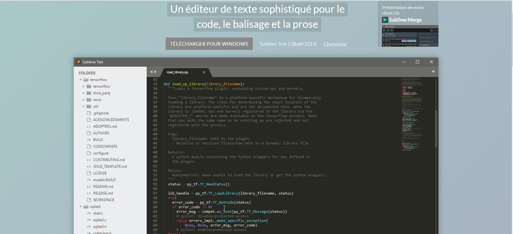

Un éditeur de texte sophistiqué pour le code, le balisage et la prose

| GOTO ANYTHING | Utilisez Goto Anything pour ouvrir des fichiers avec seulement quelques touches et passer instantanément à des symboles, des lignes ou des mots. Déclenché avec Ctrl+ P , il est possible de: Tapez une partie d'un nom de fichier pour l'ouvrir. Tapez @pour accéder aux symboles, #rechercher dans le fichier et :accéder à un numéro de ligne. Ces raccourcis peuvent être combinés, tp@rfvous pouvez donc accéder à une fonction read_file dans un fichier text_parser.py . De même, vous tp:100amènerait à la ligne 100 du même fichier. |
| SÉLECTIONS MULTIPLES | Effectuez dix changements en même temps, pas un changement dix fois. Les sélections multiples vous permettent de modifier de manière interactive de nombreuses lignes à la fois, de renommer facilement les variables et de manipuler les fichiers plus rapidement que jamais. Essayez d'appuyer sur Ctrl+ Maj+ L pour diviser la sélection en lignes et sur Ctrl+ D pour sélectionner l'occurrence suivante du mot sélectionné. Pour effectuer plusieurs sélections avec la souris, consultez la documentation de sélection de colonne . |
| API PUISSANTE ET ÉCOSYSTÈME DE PACKAGES | Sublime Text possède une puissante API Python qui permet aux plugins d'augmenter les fonctionnalités intégrées. Package Control peut être installé via la palette de commandes, offrant un accès simple à des milliers de packages créés par la communauté. |
| ALLER À LA DÉFINITION | En utilisant les informations des définitions de syntaxe, Sublime Text génère automatiquement un index à l'échelle du projet de chaque classe, méthode et fonction. Cet index alimente la définition Goto , qui est exposée de trois manières différentes: Une fenêtre contextuelle s'affiche lorsque vous survolez un symbole Appuyez sur F12 lorsque le curseur est sur un symbole Le symbole Goto dans la fonctionnalité de projet L'indexation des symboles peut être personnalisée par syntaxe via des fichiers de configuration, permettant aux utilisateurs d'adapter la fonctionnalité à leurs besoins. |
| PALETTE DE COMMANDES | La palette de commandes contient des fonctionnalités rarement utilisées, telles que le tri, la modification de la syntaxe et la modification des paramètres d'indentation. En quelques touches, vous pouvez rechercher ce que vous voulez, sans jamais avoir à naviguer dans les menus ou à vous souvenir des raccourcis clavier obscurs. Afficher la palette de commandes avec Ctrl+ Maj+ P . |